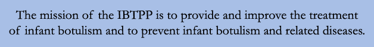

Infant Botulism is an orphan ("rare") disease that affects infants primarily between one and 52 weeks of age. First recognized in 1976, infant botulism occurs globally and is the most common form of human botulism in the United States.
Infant botulism is a novel form of human botulism in which ingested spores of Clostridium botulinum colonize and grow in the infant's large intestine and produce botulinum neurotoxin in it. The action of the toxin in the body produces constipation, weakness (notably of gag, cry, suck and swallow), loss of muscle tone, and ultimately, flaccid ("limp") paralysis. Affected infants have difficulty feeding and often, breathing. However, in the absence of complications, patients recover completely from the the disease.